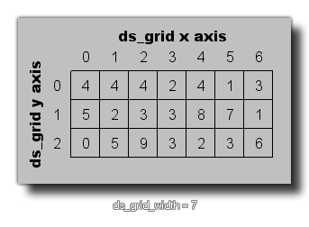

ds_grid_width(index);
| Argument参数 | Description描述 |
|---|---|
| index | This index of the grid to find the width of.待检索宽度的栅格结构索引 |
Returns 返回值: Real 实数型
This function will return the width of the given grid. This
value is the number of cells the grid has along the x-axis and is
always an integer, as shown in the image below:
这个函数将会返回被给定栅格的宽度。这个值是沿y轴方向上栅格拥有的单元格的数量且总是一个整数，正如下图所示： 
var i, j;
for (i = 0; i < ds_grid_width(grid); i += 1)
{
for (j = 0; j < ds_grid_height(grid); j +=
1)
{
if ds_grid_get(grid, i, j) =
1
{
instance_create(i
* 32, j * 32, obj_Wall);
}
}
}
The above code will loop through the ds_grid indexed in the
variable "grid" and if the value found in any specific cell is
equal to 1, it will then create an instance of "obj_Wall" at the
appropriate position within the room.
上述代码将循环遍历索引为变量"grid"的栅格并且如果发现任意一个单元格的值是1，它将创建一个"obj_Wall"实例在房间内的对应位置。
| Converted from CHM to HTML with chm2web Pro 2.85 (unicode) |